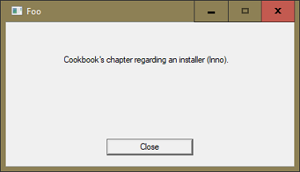

It is rare these days to install an application in, say, C:\MyFolder. Under such rare circumstances, it might be possible to install an application without admin rights.
However, even installing a font requires admin rights.
Our application is now ready to be installed on a client's machine. What we need is a tool that:
SetUp.exe (you could choose a different name) that installs MyApp on the target machine with all its filesThere are other things an installer might do, but these are the essential tasks.
There are quite a number of tools available to write installers. Wix[1] is popular, and a good candidate if you need to install your application in large corporations.
Wix is very powerful, but its power has a price: complexity. We reckon your first customers are unlikely to have the complex installation requirements of a large corporation. You can start with something simpler.
If that’s not so, and you need to install your application in a complex corporate IT environment, consider consulting an IT professional for this part of the work.
Starting smaller allows you to choose a tool that is less complicated and can be mastered fast. Inno has made a name for itself as a tool that combines powerful features with an easy-to-use interface.
To download Inno visit http://www.jrsoftware.org/isdl.php. We recommend the 'QuickStart Pack'. That not only installs the Inno compiler and its help but also Inno Script Studio from Kymoto (https://www.kymoto.org/).
It also comes with an encrypting DLL – although we don't see the point of encrypting the installer: after installation user can access all the files anyway.
The Script Studio not only makes it easier to use Inno, it also comes with a very helpful debugger.
At the time of writing, both packages are free, even for commercial usage. We encourage you to donate to both Inno and Script Studio as soon as you start to make money with your software.
The easiest way to start with Inno is to take an existing script and study it. Trial and error and Inno's old-fashioned-looking but otherwise excellent help are your friends.
When you run into an issue or badly need a particular feature, then Googling for it is, of course, a good idea, and can be even better than referring to Inno's help. The help is excellent as a reference – you just type a term you need help with and press F1 – but if you don't know exactly what to search for, Google is your friend.
Often enough Google points you to Inno's help anyway, getting you straight to the right page. In For example, Google does an excellent job when you search for something like Inno src.
We have found that all we needed while getting acquainted with Inno.
An installer needs admin rights. Installing a program is a potentially dangerous thing.
It is rare these days to install an application in, say, C:\MyFolder. Under such rare circumstances, it might be possible to install an application without admin rights.
However, even installing a font requires admin rights.
Programs are usually installed in one of:
C:\Program FilesC:\Program Files (x86)Those directories are protected by Windows, so only an administrator can install programs. An installer might do other things that require admin rights, for example…
Again, you must consider where certain things should be written to. Log files cannot and should not go into either C:\Program Files and C:\Program Files (x86), so they need to go elsewhere.
Let's suppose we want to install an application Foo. Your options are to create a folder Foo within…
C:\ProgramDataC:\Users\{username}\AppData\LocalC:\Users\{username}\AppData\RoamingThe Roaming folder is the right choice if a user wants the application to be available regardless of which computer she logs on to.
There is only one difference between the AppData and the ProgramData folders: every user has her own AppData folder but there is only a single ProgramData folder, shared by all users.
The folder C:\ProgramData is hidden by default, so you will see it only when you tick the Hidden items checkbox on the View tab of the Windows Explorer.
Of course you can put that folder in any place you want — provided you have the necessary rights — but by choosing one of these two locations you stick to what's usual under Windows.
We use a very simple application for this chapter: the application Foo just puts up a form:

As soon as you press either Enter or Esc or click the Close button it will quit. That's all it does.
The application comes with several files. This is a list of http://cookbook.dyalog.com/code/v16/:
Foo.dwsFoo.exe was created with the File > Export menu commandFoo.exefoo.icoFoo.issfoo.ini.remove_meReadMe.htmlAn HTM with basic information about the application
With the exception of Foo.exe and Foo.iss the files are included for illustrative purposes only. The INI, for example, is not processed at all by Foo.
Before going into any detail let's look briefly at a typical Inno script.
An Inno script, like a good old-fashioned INI, has sections:
[Setup] section.SetUp.exeDefines programs (in a scripting language similar to Pascal) for doing more complex things
Inno’s powerful built-in capabilities allow us to achieve our goals without writing any code, so we won't use the scripting capabilities. Note however that for many common tasks there are scripts available on the Internet.
Double-clicking the file's icon should open it in Inno Script Studio, the Inno IDE, with its execution and debugging tools.
As a preamble, define as variables all the values you will use in the script.
This makes the script more readable, and guards against typos and conflicts.
#define MyAppVersion "1.0.0"
#define MyAppName "Foo"
#define MyAppExeName "Foo.exe"
#define MyAppPublisher "My Company Ltd"
#define MyAppURL "http://MyCompanyLtd.com/Foo"
#define MyAppIcoName "Foo.ico"
#define MyBlank " "MyBlank is included to improve readability. It makes it easier to spot a blank character in a name or path.
[Setup]
; NOTE: The value of AppId uniquely identifies this application.
; It's a 36-character long vector called a UUID or GUID.
AppId={{E0DF5CAB-97E5-4935-A2ED-A7D43DD958D9}
AppName="{#MyAppName}"
AppVersion={#MyAppVersion}
AppVerName={#MyAppName}{#MyBlank}{#MyAppVersion}
AppPublisher={#MyAppPublisher}
AppPublisherURL={#MyAppURL}
AppSupportURL={#MyAppURL}
AppUpdatesURL={#MyAppURL}
DefaultDirName={pf32}\{#MyAppPublisher}\{#MyAppName}
DefaultGroupName={#MyAppPublisher}\{#MyAppName}
AllowNoIcons=yes
OutputDir=ReadyToShip\Foo
OutputBaseFilename="SetUp_{#MyAppName}"
Compression=lzma
SolidCompression=yes
SetupIconFile={#MyAppIcoName}
UninstallDisplayIcon={app}\{#MyAppIcoName}The meaning of much of the above is pretty obvious. All those names must be defined, however: Inno needs them.
Notes:
{#varsname}.AppId is used to identify an application, in particular for un-installing it. It can be anything as long as it is less than 128 characters long but using a GUID[2] is a good idea. Tip: don't add a version number to it.
You can create a GUID from within Inno Script Studio: check the Tools > Generate GUID menu item.
pf32 is an internal Inno constant. It points to the machine's 32-bit program folder, by default C:\Program folder (x86).
If you are packaging a 64-bit application, use pf64 instead. Don't use pf. Although this does have a default and might work it's just not obvious: better to avoid this and be explicit.
AllowNoIcons←1 will add a checkbox Don't create a Start Menu folder to the installer. That leaves it up to the user whether the installer should create such a folder, and under which name.app is a constant that points to the folder where the user wants to install the application. It defaults to DefaultDirName: that is just a suggestion the user might or might not accept.
app will point to the default, or whatever folder the user chooses instead.
[Languages]
Name: "english"; MessagesFile: "compiler:Default.isl"; \
LicenseFile: "License.txt"; \
InfoBeforeFile: "ReadMe_Before.txt"; \
InfoAfterFile: "ReadMe_After.txt";Inno supports multilingual installations but this is beyond the scope of this chapter. We define just one language here. The parameters for a single language must be defined on a single line but you can avoid very long lines by splitting them with a \ at the end of a line as shown above.
While the two parameters Name and MessageFile are required, the other three parameters are optional:
LicenseFileInfoBeforeFileInfoAfterFileWhen we execute Setup.exe you will see when exactly their content is displayed. If LicenseFile is defined the user must accept the conditions before the installation completes.
[Registry]
Root: HKLM32; Subkey: "Software\{#MyAppPublisher}\{#MyAppName}"; \
ValueType: string; ValueName: "RecentFiles"; ValueData: ""; Flags: uninsdeletekeyThis section allows you to add settings to the Windows Registry.
Notes:
Root defines the root key. See The Windows Registry: root keys for details of which root keys you can specify.Subkey defines the remaining part of the path (without the value).ValueName defines the name of the value.ValueData defines the actual value associated with root/subkey/valuename.ValueName by Inno.ValueData by Inno.ValueType specifies the data type of ValueData. If ValueType is unspecified (or none) Inno will create the key (or SubKey) but not the value (or ValueName) and therefore no data (ValueData) either.Inno supports the following data types:
For details refer to the Inno help regarding the [Registry] setting.
uninsdeletekey tells Inno that to delete the Registry key when the application is uninstalled. Without that keyword, Inno would not delete any Registry keys and values when the application is uninstalled.uninsdeletekeyifempty keyword is similar but let Inno delete the Registry key only when it is empty.
This comes in handy when you use the Registry for saving user preferences: as long as the user has not defined any preferences the key can be deleted safely.
If she has defined preferences, you might prefer to leave them alone. She might uninstall just to install a better version, expecting her preferences to survive the procedure.
[Dirs]
Name: "{commonappdata}\{#MyAppName}"; Permissions: users-modifyFrom the Inno Help:
This optional section defines any additional directories Setup is to create besides the application directory the user chooses, which is created automatically. Creating subdirectories underneath the main application directory is a common use for this section.
With the above line we tell Inno to create a folder {#MyAppName} which in our case will be “My Company Ltd”. Note that commonappdata defaults to ProgramData\, usually on the C:\ drive.
Instead we could have used localappdata, which defaults to C:\Users\{username}\AppData\Local. There are many more constants available; refer to Constants in the Inno Help for details.
We also tell Inno to give any user in the Users group the right to modify files in this directory.

Of course you must not grant Modify rights to the folder where your application's EXE lives, let alone to folders not associated with your application.
Note that if you install the application again the folder won't be created – and you won't see an error message either.
[Files]
Source: "ReadMe.html"; DestDir: "{app}";
Source: "Foo.ico"; DestDir: "{app}";
;Source: "bridge160_unicode.dll"; DestDir: "{app}";
;Source: "dyalognet.dll"; DestDir: "{app}";
Source: "{#MyAppExeName}"; DestDir: "{app}";
Source: "foo.ini.remove_me"; DestDir: "{app}"; DestName:"foo.ini"; Flags: onlyifdoesntexist;
Source: {#MyAppIcoName}; DestDir: "{app}";
Source: "C:\Windows\Fonts\apl385.ttf"; DestDir: "{fonts}"; FontInstall: "APL385 Unicode"; Flags: onlyifdoesntexist uninsneveruninstall
; NOTE: Don't use "Flags: ignoreversion" on any shared system files
; ----------- For Ride: ---------------
;Source: "Conga*.dll"; DestDir: "{app}";
; -------------------------------------We have included here a number of files quite common in any APL application:
ReadMe.htmlbridge* and DyalogtNet.dll, needed for even the simplest .NET callfoo.ini.remove_me, to be renamed to foo.ini if one does not already exist
This way you ensure no existing INI file is overwritten. This is important if the user installs a better version over an earlier one.
{#MyAppIcoName}; DestDir: "{app}"; you make sure that a folder, etc., is inserted into the Start menu. However, you may give the user a say in this; see AllowNoIcons in the The section [SetUp].APL385 Unicode if it does not already exist (onlyifdoesntexist) and we ensure the font is not uninstalled, even if the application is (uninsneveruninstall).
If your applications call any .NET methods make sure you include the Dyalog .NET bridge files!
[Icons]
Name: "{group}\Start Foo"; Filename: "{app}\{#MyAppExeName}"; WorkingDir: "{app}\"; IconFilename: "{app}\{#MyAppIcoName}"
Name: "{commondesktop}\{#MyAppName}"; Filename: "{app}\{#MyAppExeName}"; IconFilename: "{app}\{#MyAppIcoName}"; Tasks: desktopiconThe first line inserts group and application name into the Windows Start menu. Read up on group in the Inno help for what the group name means and where it is installed: there are differences between users who install the application with admin rights and those who don't.
[Run]
Filename: "{app}\ReadMe.html"; Description: "View the README file"; Flags: postinstall shellexec skipifsilent
Filename: "{app}\{#MyAppExeName}"; Description: "Launch Foo"; Flags: postinstall skipifsilent nowaitNotes:
ReadMe.html with the default browser (shellexec on an HTML file) after the application has been installed (postinstall).
If the command-line options silent or verysilent are specified then ReadMe.html is not put on display (skipifsilent).
postinstall) but only if neither silent nor verysilent were specified (skipifsilent) and Inno is not waiting for the application (nowait).[Tasks]
Name: "desktopicon"; Description: "{cm:CreateDesktopIcon}"; GroupDescription: "{cm:AdditionalIcons}";From the Inno help:
This section is optional. It defines all of the user-customizable tasks Setup will perform during installation. These tasks appear as checkboxes and radio buttons on the Select Additional Tasks wizard page.
In our example we specify only one task, and it's linked to desktopicon (see the [Icons] section).
However, this is a much more powerful feature than it looks like at first glance! For example, you can give the user a choice between installing the…
or any combination of them.
To achieve that you need to add the (optional) section [Components] and list all the files involved there. You can then create additional lines in the [Task] section that link to those lines in [Components].
The user is then presented with a list of checkboxes that allow her to select the options she's after.
Note that cm:CreateDesktopIcon refers to a message CreateDesktopIcon which can be modified if you wish. The cm stands for Custom Message. For that, you would insert the (optional) section [CustomMessages] like this:
[CustomMessages]
CreateDesktopIcon = This and thatThat would overwrite the internal message.
Inno comes with a built-in script language that allows you to do pretty much whatever you like. However, scripting is beyond the scope of this chapter.
There is no need to take action - Inno will handle this automatically for you. There is, however, one exception and one pitfall:
Inno won't (can't) delete those automatically. This is the recommended way to delete files:
[InstallDelete]
Type: files; Name: {app}\foo.bar
Type: files; Name: {app}\baz\quux.txtAlthough wildcards are supported they should never be used because you may well delete user files.
When an EXE is part of the installation Inno compares the “FileVersion” of what's already installed with the one that is about to be installed. If they match Inno won't take any action. That means that if you forget to set the “FileVersion” (see chapter 10: “Make: Export”) when creating the stand-alone EXE then it will always be 0.0.0.0, so they won't ever differ, and the first installed EXE will never be replaced!
A problem like the aforementioned one won't cause an error message; you just don't get the new EXE installed. Assuming that you have been careful enough to realize that there is a problem, how to get to the bottom of it?
If the installer does not behave as expected add /LOG={filename} to it. Then Inno will report all actions and even conclusions to that file.
In the above scenario you would find something similiar to this in the log file:
2018-05-08 06:26:30.826 -- File entry --
2018-05-08 06:26:30.827 Dest filename: C:\Program Files (x86)\..\Foo.exe
2018-05-08 06:26:30.827 Time stamp of our file: 2018-05-07 13:07:26.000
2018-05-08 06:26:30.827 Dest file exists.
2018-05-08 06:26:30.827 Time stamp of existing file: 2018-05-07 12:51:24.000
2018-05-08 06:26:30.827 Version of our file: 0.0.0.0
2018-05-08 06:26:30.832 Version of existing file: 0.0.0.0
2018-05-08 06:26:30.832 Same version. Skipping.Imagine a situation were a new version of Dyalog comes with an exciting new system function or primitive. You want to start using the new version straight away.
In such a situation it might be tempting to just enter the new version number in whatever script or batch file in your build process is responsible for deciding which version to use, but that would not end well.
Keep always in mind that a new version of Dyalog does not only come with a new EXE; expect some if not all DLLs to have changed as well. And tools like Conga might well come with a new version, too.
Therefore updating to a new version of Dyalog APL always requires the Inno script to be reviewed!
Although Inno is significantly easier to master than the top dog Wix, it provides a large selection of features and options. This chapter only scratches the surface, but it will get you going.
Footnotes
http://wixtoolset.org/:
Windows Installer
https://blogs.msdn.microsoft.com/oldnewthing/20080627-00/?p=21823/:
About GUIDs